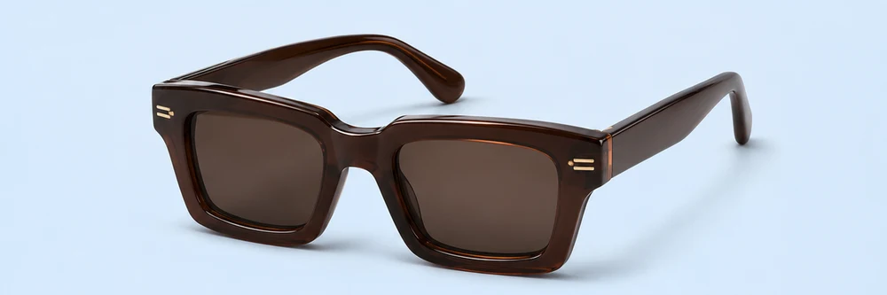
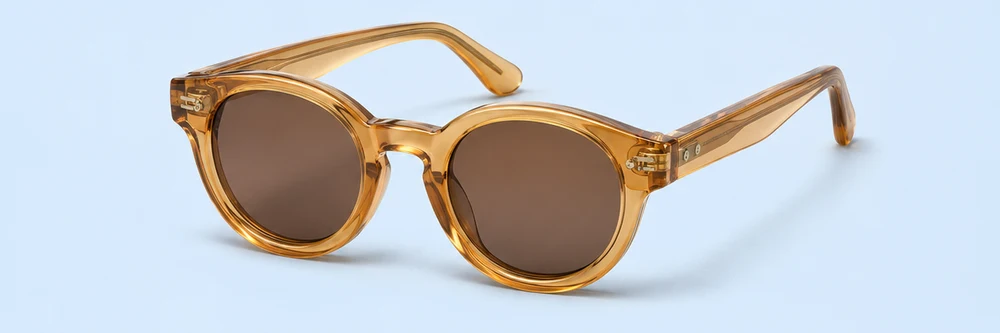
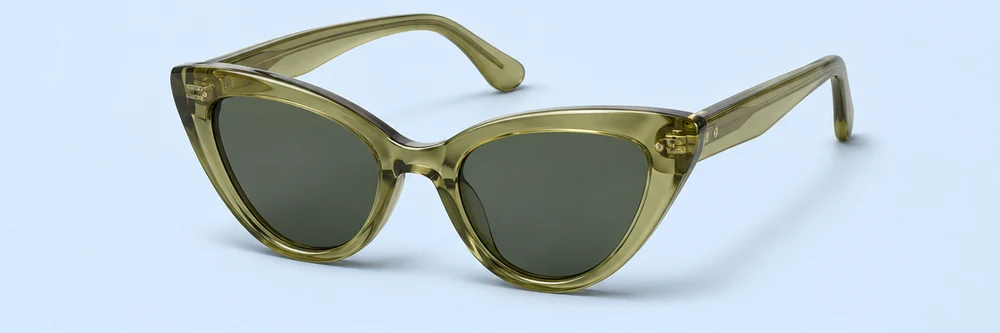

Чёткий силуэтDaily
Прямоугольная оправа
Тёмный эспрессо
Солнцезащитные очки. Ваше настроение.
У любимых дней есть свой свет.
У вас - своя форма.
Для городских маршрутов
и планов без расписания.
Чёткие линии. Мягкие оттенки. Свой характер.
Начните с формы, которая нравится вам.Коллекция настроений
Сравните силуэты и детали.
Какой из них - ваш?

Чёткий силуэтПрямоугольная оправа

Мягкие линииОкруглая оправа

Выразительный акцентОправа «кошачий глаз»
Демонстрационные модели. Цены, размеры, свойства линз и наличие появятся после подключения каталога бренда.
Присмотритесь ближе
Переключайте оправы, чтобы сравнить их характер. Это просмотр силуэтов, а не виртуальная примерка.
Собранный силуэт с широкими дужками. Для образов, в которых хочется чётких линий.
В вашем ритме
Кофе по дороге. Поворот к морю. Ещё один час на солнце. Иногда для нового настроения достаточно одной детали.
Найти свою паруЧтобы выбрать увереннее
Фотография помогает выбрать стиль.
Посадку лучше проверить по размерам.
Возьмите удобные очки как ориентир.
Схема условная, без размеров конкретной модели.
Измерьте очки, которые уже удобно сидят, или найдите маркировку на внутренней стороне дужки.
Проверьте ширину линзы, мостик и длину дужки в карточке товара. Не ориентируйтесь только на фото.
Материалы, свойства линз, комплектация и условия возврата указаны у продавца на Wildberries.
Солнечный журнал
Пара минут, чтобы разобраться
в выборе и уходе.
Выбор
Начните с того, что нравится именно вам.
Уход
Хранение, очистка и несколько привычек.
Это демо дизайна, реальные продажи здесь не ведутся. В готовом сайте кнопка выбранной модели будет вести на её карточку в Wildberries, где покупатель увидит цену, наличие, доставку и условия возврата.
Нет. Изображения созданы ИИ для демонстрации дизайна, модели и название SOLA вымышлены. В рабочей версии их заменят фотографиями и точными характеристиками товаров заказчика.
Сравните параметры модели с удобными очками, которые уже у вас есть. Проверьте ширину оправы, ширину линзы, мостик и длину дужки. Изображение на сайте не заменяет примерку.
Ваш следующий солнечный день